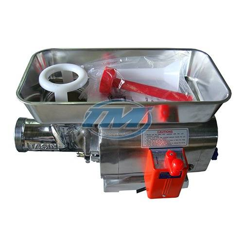

Máy Xay Thịt Công Nghiệp Tân Minh
Máy xay thịt công nghiệp là thiết bị nhà bếp không thể thiếu trong các khu bếp ăn gia đình, nhà hàng, khách sạn, quán ăn, căng tin,... Máy giúp xay nhuyễn thịt, cá, cua, tôm,... nhanh chóng, hiệu quả, tiết kiệm thời gian và công sức cho người sử dụng.
Tân Minh Group là nhà sản xuất và phân phối uy tín các loại máy xay thịt công nghiệp chất lượng cao trên thị trường Việt Nam. Với nhiều năm kinh nghiệm trong lĩnh vực sản xuất máy móc chế biến thực phẩm, Tân Minh Group luôn mang đến cho khách hàng những sản phẩm chất lượng tốt nhất, giá cả cạnh tranh và dịch vụ chăm sóc khách hàng chu đáo.
Máy Xay Thịt Công Nghiệp là gì?
Máy xay thịt công nghiệp là thiết bị chuyên dụng được sử dụng để xay, nghiền và trộn các loại thịt, cá, hải sản, rau củ quả,... thành hỗn hợp mịn với năng suất cao, đáp ứng nhu cầu sản xuất của các cơ sở chế biến thực phẩm quy mô lớn và vừa. Máy xay thịt công nghiệp đóng vai trò quan trọng trong việc:
- Nâng cao hiệu quả sản xuất: Giúp tiết kiệm thời gian và công sức cho việc xay nhuyễn nguyên liệu, tăng năng suất lao động.
- Cải thiện chất lượng sản phẩm: Giúp tạo ra sản phẩm có độ mịn, dai, và đồng nhất, đảm bảo hương vị thơm ngon và an toàn vệ sinh thực phẩm.
- Đa dạng hóa sản phẩm: Giúp chế biến nhiều loại món ăn khác nhau như giò chả, xúc xích, pate, chả cá, hamburger,...
Phân Loại Máy Xay Thịt Công Nghiệp:
Máy xay thịt công nghiệp được phân loại theo nhiều tiêu chí khác nhau để đáp ứng nhu cầu đa dạng của khách hàng:
Theo Công Suất:
- Máy xay thịt công nghiệp cỡ nhỏ (dưới 1000W): Phù hợp cho nhu cầu sử dụng trong gia đình, quán ăn nhỏ, có thể xay khối lượng thịt vừa phải.
- Máy xay thịt công nghiệp cỡ vừa (1000W - 2000W): Phù hợp cho nhu cầu sử dụng trong nhà hàng, khách sạn, cơ sở chế biến thực phẩm quy mô vừa, có thể xay khối lượng thịt lớn hơn.
- Máy xay thịt công nghiệp cỡ lớn (trên 2000W): Phù hợp cho nhu cầu sử dụng trong nhà máy chế biến thực phẩm quy mô lớn, có thể xay khối lượng thịt rất lớn, hoạt động liên tục.
Theo Tính Năng:
- Máy xay thịt tươi sống: Dùng để xay thịt tươi sống, đảm bảo độ tươi ngon và dinh dưỡng cho sản phẩm.
- Máy xay thịt chín: Dùng để xay thịt đã được nấu chín, phù hợp cho việc chế biến các món ăn như pate, chả cá.
- Máy xay thịt đa năng: Ngoài chức năng xay thịt, máy còn có thể xay được các nguyên liệu khác như cá, gia vị, rau củ quả, đáp ứng nhu cầu chế biến đa dạng các món ăn.
Theo Thiết Kế:
- Máy xay thịt công nghiệp dạng đứng: Thiết kế nhỏ gọn, tiết kiệm diện tích, phù hợp cho những không gian bếp chật hẹp.
- Máy xay thịt công nghiệp dạng nằm: Thiết kế hiện đại, sang trọng, có năng suất cao, phù hợp cho các cơ sở chế biến thực phẩm quy mô lớn.
Hướng dẫn sử dụng và bảo quản máy xay thịt công nghiệp
Máy xay thịt công nghiệp là thiết bị đắc lực cho các cơ sở chế biến thực phẩm, tuy nhiên để đảm bảo an toàn và hiệu quả sử dụng, bạn cần tuân thủ các hướng dẫn sau:
Hướng Dẫn Sử Dụng
- Kiểm tra máy:
- Kiểm tra xem máy đã được cắm điện và nguồn điện ổn định chưa.
- Đảm bảo các bộ phận của máy được lắp đặt đúng và chắc chắn.
- Vệ sinh sạch sẽ máy trước khi sử dụng.
- Cắt thịt:
- Cắt thịt thành miếng vừa phải, cỡ lóng ngón tay, để máy dễ dàng xay nhuyễn.
- Loại bỏ xương và gân trong thịt trước khi cho vào máy.
- Cho thịt vào máy:
- Cho lượng thịt vừa đủ vào khay đựng, không quá tải máy.
- Không cho quá nhiều thịt vào cùng lúc vì có thể làm kẹt máy.
- Khởi động máy:
- Xoay công tắc từ từ theo chiều kim đồng hồ để khởi động máy.
- Không khởi động máy đột ngột để tránh làm hỏng động cơ.
- Sử dụng máy:
- Không để máy hoạt động liên tục quá 30 phút.
- Nên cho máy nghỉ ngơi sau mỗi 30 phút sử dụng để động cơ được làm mát.
- Sử dụng dụng cụ đẩy thịt đi kèm để đẩy thịt vào máy, không dùng tay.
Bảo Quản Và Vệ Sinh
- Vệ sinh máy:
- Vệ sinh máy ngay sau khi sử dụng.
- Tắt máy và rút phích cắm điện trước khi vệ sinh.
- Tháo rời các bộ phận có thể tháo rời để vệ sinh kỹ.
- Rửa sạch các bộ phận bằng nước ấm và xà phòng, đặc biệt chú ý phần lưỡi dao và trục xoắn.
- Lau khô hoàn toàn các bộ phận trước khi lắp lại.
- Bôi trơn:
- Bôi một lớp dầu ăn mỏng lên các bộ phận kim loại để chống gỉ sét.
- Bảo quản:
- Bảo quản máy ở nơi khô ráo, thoáng mát.
- Tránh để máy tiếp xúc trực tiếp với ánh nắng mặt trời hoặc nguồn nhiệt cao.
- Che phủ máy khi không sử dụng.
- Kiểm tra và bảo dưỡng:
- Kiểm tra máy định kỳ để đảm bảo hoạt động tốt.
- Bảo dưỡng máy theo hướng dẫn của nhà sản xuất.
- Thay thế các bộ phận bị hỏng kịp thời.
Xem thêm: Cấu tạo máy xay thịt công nghiệp và chức năng của từng bộ phận
Tiêu chí lựa chọn máy xay thịt công nghiệp phù hợp
Việc lựa chọn máy xay thịt công nghiệp phù hợp đóng vai trò rất quan trọng, ảnh hưởng trực tiếp đến hiệu quả sản xuất kinh doanh. Dưới đây là những tiêu chí quan trọng cần xem xét:
1. Nhu cầu sử dụng và quy mô sản xuất:
- Công suất xay: Xác định khối lượng thịt cần xay mỗi ngày/giờ để lựa chọn máy có công suất phù hợp. Máy có công suất càng lớn, xay thịt càng nhanh, đáp ứng nhu cầu sản xuất lớn.
- Mức độ thường xuyên: Nếu sử dụng máy liên tục trong thời gian dài, nên ưu tiên máy có công suất lớn, động cơ bền bỉ, tránh tình trạng quá tải, hỏng hóc.
- Loại nguyên liệu: Cần xem xét loại thịt (heo, bò, gà,...) và độ dai của thịt để lựa chọn máy có dao xay phù hợp.
2. Tính năng của máy:
- Chức năng xay đa dạng: Một số dòng máy được tích hợp nhiều chức năng xay khác nhau (xay thô, xay nhuyễn, xay nhuyễn mịn,…) đáp ứng đa dạng nhu cầu chế biến.
- Tốc độ xay: Máy có nhiều tốc độ xay giúp bạn dễ dàng điều chỉnh độ nhuyễn của thịt theo ý muốn.
- Tính năng đảo chiều: Giúp xử lý tình trạng kẹt thịt dễ dàng hơn.
- Tính năng tự ngắt khi quá tải: Bảo vệ động cơ, tăng tuổi thọ cho máy.
3. Chất liệu và độ bền:
- Chất liệu cối xay, dao xay: Nên chọn máy có cối xay và dao xay làm từ inox 304 cao cấp, đảm bảo an toàn vệ sinh thực phẩm, chống gỉ sét, độ bền cao.
- Chất liệu thân máy: Ưu tiên máy có thân vỏ bằng inox hoặc hợp kim nhôm chắc chắn, chịu lực tốt, dễ dàng vệ sinh.
4. Thương hiệu và giá thành:
- Thương hiệu uy tín: Nên chọn mua máy từ các thương hiệu uy tín, có nguồn gốc rõ ràng, đảm bảo chất lượng sản phẩm và chế độ bảo hành tốt.
- Giá thành hợp lý: So sánh giá bán của các dòng máy cùng phân khúc, cân nhắc lựa chọn sản phẩm phù hợp với ngân sách.
5. Chế độ bảo hành và dịch vụ hậu mãi:
- Thời gian bảo hành: Nên chọn sản phẩm có thời gian bảo hành dài hạn, tối thiểu 12 tháng.
- Chính sách bảo trì, sửa chữa: Tìm hiểu rõ chính sách bảo trì, sửa chữa, thay thế linh kiện của nhà cung cấp.
- Dịch vụ hỗ trợ khách hàng: Lựa chọn nhà cung cấp có dịch vụ hỗ trợ khách hàng tận tình, chu đáo.
Địa chỉ mua máy xay thịt công nghiệp uy tín
Tiêu chí lựa chọn:
- Thương hiệu uy tín: Ưu tiên các thương hiệu đã khẳng định được chất lượng sản phẩm và dịch vụ hậu mãi tốt như Tân Minh, Vinastar, Điện Máy Bếp Việt, BigStar, Berjaya...
- Công suất phù hợp: Xác định nhu cầu sử dụng để lựa chọn máy có công suất phù hợp, tránh lãng phí.
- Chất liệu cao cấp: Ưu tiên máy làm từ inox 304, đảm bảo vệ sinh an toàn thực phẩm và độ bền cao.
- Chế độ bảo hành: Chọn nơi bán có chính sách bảo hành rõ ràng, minh bạch, thời gian bảo hành dài hạn.
- Giá cả cạnh tranh: So sánh giá cả từ nhiều nguồn cung cấp khác nhau để có lựa chọn tối ưu nhất.
Địa chỉ tham khảo:
- Các siêu thị điện máy lớn: Thiên Hòa, Nguyễn Kim, Điện Máy Xanh... thường có bán các dòng máy xay thịt công nghiệp của nhiều thương hiệu.
- Cửa hàng chuyên doanh thiết bị bếp công nghiệp: Các cửa hàng này thường tập trung nhiều dòng máy xay thịt công suất lớn, đa dạng mẫu mã và chủng loại.
- Mua online trên các trang thương mại điện tử: Shopee, Lazada, Tiki... cũng là kênh mua sắm tiện lợi, bạn có thể dễ dàng so sánh giá và xem đánh giá từ người dùng trước khi quyết định.
- Liên hệ trực tiếp nhà sản xuất hoặc nhà phân phối: Đây là cách thức đảm bảo mua được hàng chính hãng với giá tốt nhất.
Tin Tức Mới Nhất